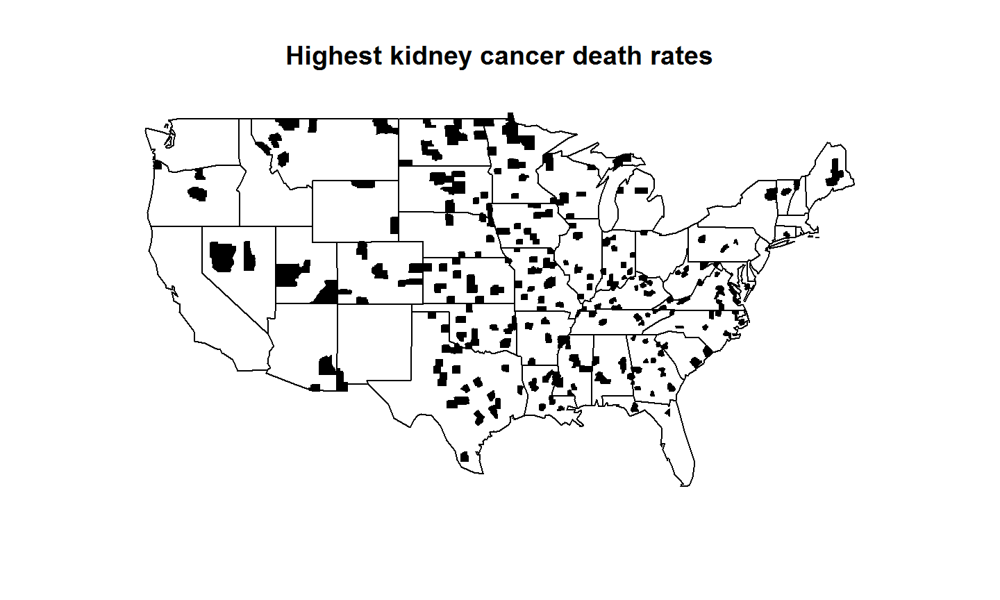
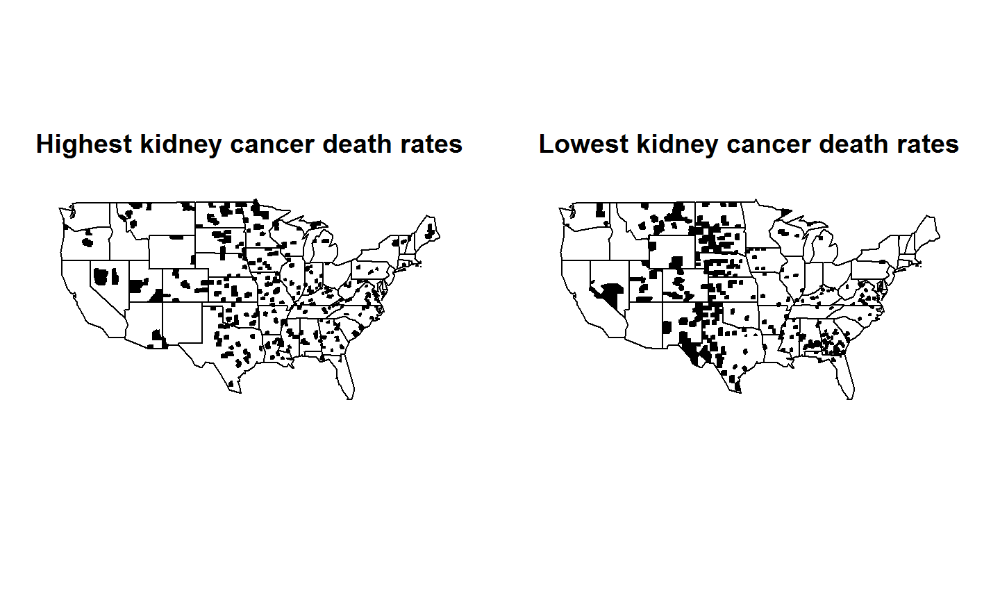
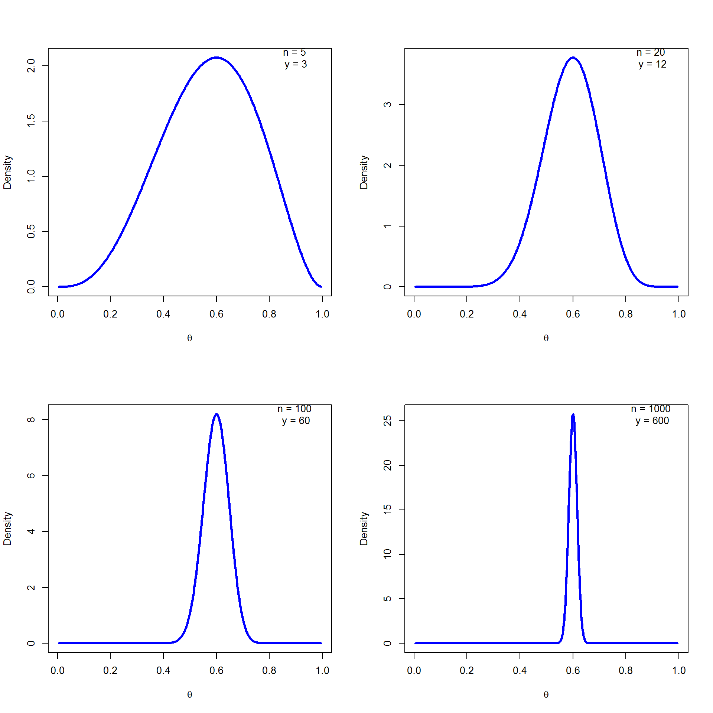
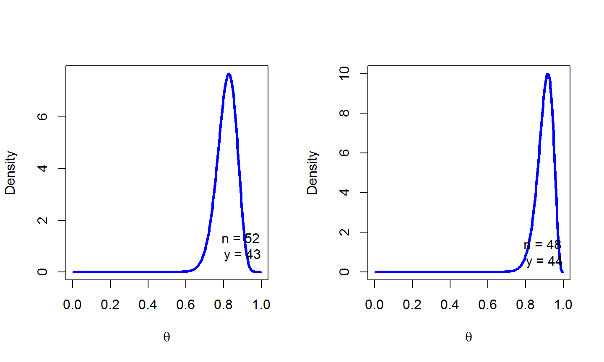

Quiz!
Quiz!

Quiz Answer
- Mix simulation of repeated i.i.d trials with 20% of success and sort
## 0/10 1/10 1/10 14/100 15/100 ## ## 18/100 19/100 192/1000 193/1000 195/1000 ## ## 196/1000 198/1000 2/10 20/100 20/100 ## ## 20/100 205/1000 206/1000 207/1000 217/1000 ## ## 223/1000 23/100 26/100 28/100 3/10 ## ## 3/10 3/10 4/10 4/10 4/10
- More variation in observed rates with smaller sample sizes
- Answer: High cancer and low cancer counties are small populations
Bayesian Mechanics
- Set up full probability model
- for all observable & unobservable quantities
- consistent with problem knowledge & data collection
- Condition on observed data
- calculate posterior probability of unobserved quantities conditional on observed quantities
- Evaluate
- model fit
- implications of posterior
Notation
- Basic Quantities
- \(y\): observed data
- \(\theta\): parameters (and other unobserved quantities)
- \(x\): constants, predictors for conditional models
- Basic Predictive Quantities
- \(\tilde y\): unknown, potentially observable quantities
- \(\tilde x\): predictors for unknown quantities
Naming Conventions
Joint: \(p(y,\theta)\)
- Sampling/Likelihood: \(p(y\vert \theta)\)
- Sampling is function of \(y\) with \(\theta\) fixed (probability function)
- Likelihood is function of \(\theta\) with \(y\) fixed (not probability function)
- Prior: \(p(\theta)\)
- Posterior: \(p(\theta\vert y)\)
- Data Marginal (Evidence): \(p(y)\)
Posterior Predictive: \(p(\tilde y\vert y)\)
Bayes's Rule for Posterior
- Inversion: Final result depends only on sampling distribution (likelihood) \(p(y\vert\theta)\) and prior \(p(\theta)\)
Bayes's Rule up to Proportion
If data \(y\) are fixed, then \[ \begin{array}{rcl} p(\theta\vert y ) & = & \frac{p(y\vert\theta)p(\theta)}{p(y)} \\ \\ & \propto & p(y\vert\theta)p(\theta) \\ \\ & = & p(y,\theta) \end{array} \]
- Posterior proportional to likelihood times prior
Equivalently, posterior proportional to joint
Posterior Predictive Distribution
- Predict new data \(\tilde y\) based on observed data \(y\)
- Marginalize out parameter from posterior \[ p(\tilde y \vert y) = \int_\Theta p(\tilde y \vert \theta) p(\theta \vert y)d\theta \] averaging predcitions \(p(\tilde y\vert\theta)\) weighted by posterior \(p(\theta\vert y)\)
- \(\Theta = \left\{\theta \vert p(\theta \vert y) >0 \right\}\) is the support of \(p(\theta\vert y)\)
For discrete parameters \(\theta\), \[ p(\tilde y \vert y)=\sum_{\theta \in \Theta} p(\tilde y \vert \theta)p(\theta\vert y) \]
Can mix continuous and discrete (integral as shorthand)
Event Probabilities
- Recall that an event A is a collection of outcomes
- Suppose event \(A\) is determined by indicator on parameters \[ f(\theta) = \begin{cases} 1 & \mbox{if } \theta \in A \\ 0 & \mbox{if } \theta \notin A \end{cases} \]
- e.g. \(f(\theta) = \theta_1 > \theta_2\) for \(Pr(\theta_1 > \theta_2\vert y)\)
- Bayesian event probabilities compute posterior mass \[ P(A) = \int_\Theta f(\theta)p(\theta\vert y)d\theta \]
- Not frequentist, because involves parameter probabilities
Laplace's Data and Problems
- Laplace's data on live birth in Paris from 1745-1770
| sex | live births |
|---|---|
| female | 241,945 |
| male | 251,527 |
Question 1 (Event Probability) Is a boy more likely to be born than a girl?
Question 2 (Estimate) What is the birth rate of boys vs. girls?
Bayes formulated the basic binomial model
Binomial Distribution
- Binomial distribution is number of successes \(y\) in \(N\) i.i.d. Bernoulli trials with chance of success \(\theta\)
- If \(y_1,\ldots , y_N\sim\) Bernoulli(\(\theta\)), then \((y_1 + \ldots + y_N)\sim\) Binomial(\(N,\theta\))
- The probabilistic model is \[ Binomial (y\vert N, \theta) = {{N}\choose{y}}\theta^y(1-\theta)^{N-y} \] where the binomial coefficient normalizes for permutation (i.e., which subset of \(n\) has \(y_n =1\)): \[ {{N}\choose{y}} = \frac{N!}{y!(N-y)!} \]
Bayes's Binomial Model
- Data
- \(y:\) total number of male live births (241,945)
- \(N:\) total number of live births (493,472)
- Parameter
- \(\theta \in (0,1)\): proportion of male live births
- Likelihood \[ p(y\vert N,\theta) = Binomial(y\vert N,\theta) ={{N}\choose{y}}\theta^y(1-\theta)^{N-y} \]
- Prior \[ p(\theta) = Uniform(\theta\vert 0,1)=1 \]
Beta Distribution
- Required for analytic posterior of Bayes's model
- For parameters \(\alpha, \beta>0\) and \(\theta\in (0,1)\), \[ Beta(\theta\vert \alpha, \beta) = \frac{1}{B(\alpha,\beta)}\theta^{\alpha-1}(1-\theta)^{\beta-1} \]
- Euler's Beta function is used to normalize \[ Beta(\theta\vert \alpha, \beta) = \int_0^1 u^{\alpha-1}(1-u)^{\beta-1}du = \frac{\Gamma(\alpha)\Gamma(\beta)}{\Gamma(\alpha+\beta)} \] where \(\Gamma()\) is continuous generalization of factorial
- Note: \(Beta(\theta\vert 1,1)=Uniform(\theta, 0,1)\)
Beta Distribution examples

Posterior distribution
- Given Baye's general formula for the posterior \[ p(\theta\vert y, N)=\frac{Binomial(y\vert N,\theta)Uniform(\theta\vert 0,1)}{\int_\Theta Binomial(y\vert N,\theta')p(\theta')d\theta'} \]
- Using Euler's Beta function to normalize the posterior with final solution \[ p(\theta\vert y, N)= Beta(\theta\vert y+1, N-y+1) \]
Estimation
- Posterior is \(Beta(\theta \vert 1+ 241,945, 1+ 251,527)\)
- Posterior mean: \[ \frac{1+ 241,945}{1+ 241,945+1+ 251,527}\approx 0.4902913 \]
- Maximum likelihood estimate same as posterior mode (because of uniform prior) \[ \frac{241,945}{241,945+251,527}\approx 0.4902912 \]
- As number of observations \(\to \infty\), MLE approaches to posterior mean
Event Probability Inference
- What is probability that a male live birth is more likely than a female live birth?
\[ \begin{array}{rcl} Pr[\theta>0.5] & = & \int_\Theta I[\theta>0.5]p(\theta\vert y,N)d\theta \\ \\ & = & \int_{0.5}^1 p(\theta\vert y,N)d\theta \\ \\ & = & 1- F_{\theta\vert y,N}(0.5))\\ \\ &\approx & 1^{-42} \end{array} \] - \(I[\theta>0.5] =1\) if \(\theta>0.5\) is true and 0 otherwise - \(F_{\theta\vert y,N}\) is posterior cumulative distribution function (cdf)
Bayesian Fisher Exact Test
- Suppose we observe the following data on handedness
| Drug | AEs | Successes | Total |
|---|---|---|---|
| A | 9\((y_1)\) | 43 | 52 \((N_1)\) |
| B | 4\((y_2)\) | 44 | 48\((N_2)\) |
- Assume likelihoods \(Binomial(y_k\vert N_k, \theta_k)\), uniform priors
Is Drug B better than A? \[ \begin{array}{rcl} Pr[\theta_1 > \theta_2 \vert y, N] &=& \int_0^1 \int_0^1 p(\theta_1\vert y_1, N_1)p(\theta_2\vert y_2, N_2)d\theta_1d\theta_2\\ &\approx & 0.91 \end{array} \]
Directly interpretable result; not frequentist procedure
Visualizing Posterior Difference
- Plot of posterior difference \(p(\theta_2 -\theta_1 \vert y N)\) (B-A)

Visualizing Posterior Difference
- Plot of posterior difference \(p(\theta_2 -\theta_1 \vert y N)\) (B-A)

Visualizing Posterior Difference
library(R2OpenBUGS)
## Warning: package 'R2OpenBUGS' was built under R version 3.2.4
mymodel = function(){
y1~ dbin(theta1, N1)
y2~ dbin(theta2, N2)
theta1~dbeta(1,1)
theta2~dbeta(1,1)
theta <- theta2-theta1
}
data = list(N1 =52, N2 =48, y1=43, y2 = 44)
parameters=c("theta")
bugsInits <- function() {
return(list(theta1=0.5, theta2=0.5))
}
resbugs = bugs(data, inits=bugsInits, parameters.to.save=parameters, model.file=mymodel,
n.chains=1, n.iter=10000, n.burnin=2000, n.thin=1,
debug=TRUE)
Visualizing Posterior Difference
- Plot of posterior difference \(p(\theta_2 -\theta_1 \vert y N)\) (B-A)
- compute 95% credible interval
theta.post = resbugs$sims.list$theta
plot(density(theta.post), main= "posterior probability",
xlab=expression(theta[2]-theta[1]) )

quantile(theta.post, probs=c(.025, .5, .975))
## 2.5% 50% 97.5% ## -0.0428205 0.0842250 0.2222025
Visualizing Posterior Difference
- Plot of posterior difference \(p(\theta_2 -\theta_1 \vert y N)\) (B-A)
- compute 95% credible interval
theta.post = resbugs$sims.list$theta quantile(theta.post, probs=c(.025, .5, .975))
## 2.5% 50% 97.5% ## -0.0428205 0.0842250 0.2222025
Conjugate Priors
- Family \(F\) is a conjugate prior for family \(G\) if
- prior in \(F\) and
- likelihood in \(G\)
- entails posterior in \(F\)
- Before MCMC techniques became practical, Bayesian analysis mostly involved conjugate priors
- Still widely used because analytic solutions are more efficient than MCMC
Beta is Conjugate to Binomial
\[ \begin{array}{rcl} p(\theta\vert y, N, \alpha,\beta) &\approx& p(\theta\vert\alpha,\beta)p(y\vert N,\theta)\\ \\ &=& Beta(\theta\vert\alpha,\beta)Binomial(y\vert N,\theta)\\ \\ &=& \frac{1}{B(\alpha, \beta)}\theta^{\alpha-1}(1-\theta)^{\beta-1}{{N}\choose{y}}\theta^y(1-\theta)^{N-y}\\ \\ &\approx&\theta^{y+\alpha-1}(1-\theta)^{N-y+\beta-1}\\ \\ &\approx&Beta(\theta\vert \alpha + y, \beta +(N-y)) \end{array} \]
Chaining Updates
- Start with prior \(Beta(\theta\vert\alpha,\beta)\)
- Receive binomial data in \(K\) stages \((y_1, N_1),\ldots , (y_K, N_K)\)
- After \((y_1, N_1)\), posterior is \(Beta(\theta\vert \alpha + y_1, \beta +N_1-y_1)\)
- Use as prior for \((y_2, N_2)\) with posterior \[ Beta(\theta\vert \alpha + y_1 +y_2, \beta +(N_1-y_1) + (N_2-y_2)) \]
- Lather, rinse, repeate until final posterior \[ Beta(\theta\vert \alpha + y_1 +\ldots +y_K, \beta +(N_1 +\ldots N_K) - (y_1+\ldots +y_K)) \]
- Same results as if we had updated with combined data \[ Beta(y_1+\ldots +y_K, N_1 +\ldots N_K) \]
MAP Estimator
- For a Bayesian model \(p(y,\theta) = p(y\vert\theta)p(\theta)\), the max a posteriori (MAP) estimate maximizes the posterior \[ \begin{array}{rcl} \theta^* & = & arg max_\theta p(\theta\vert y)\\ \\ & = & arg max_\theta \frac{p(y\vert \theta)p(\theta)}{p(y)}\\ \\ & = & arg max_\theta p(y\vert \theta)p(\theta)\\ \\ & = & arg max_\theta \log p(y\vert \theta) + \log p(\theta)\\ \end{array} \]
- not Bayesian because it does not integrate over uncertainty
- not frequentist because of distributions over parameters
MAP and the MLE
- MAP estimate reduces to the MLE if the prior is uniform, i.e., \[ p(\theta) = c \] because \[ \begin{array}{rcl} \theta^* & = & arg max_\theta p(y\vert \theta)p(\theta)\\ \\ & = & arg max_\theta p(y\vert \theta)c\\ \\ & = & arg max_\theta p(y\vert \theta)\\ \end{array} \]
Penalized Maximum Likelihood
- The MAP can be made palatable to frequentists via philosophical sleight of hand
- Treat the negative log prior \(-\log p(\theta)\) as a penalty
- e.g. a \(Normal(\theta\vert\mu,\sigma)\) prior becomes a penalty function \[
\lambda_{\theta,\mu,\sigma} = - \left(
\log\sigma + \frac{1}{2}\left(\frac{\theta-\mu}{\sigma}\right)^2\right)
\]
- Maximize sum of log likelihood and negative penalty
\[ \begin{array}{rcl} \theta^* & = & arg max_\theta \log p(y\vert \theta, x) - \lambda_{\theta,\mu,\sigma}\\ \\ & = & arg max_\theta \log p(y\vert \theta, x) + \log p(\theta\vert\mu,\sigma) \end{array} \]
Proper Bayesian Point Estimates
Choose estimate to minimize some loss function
To minimize expected squared error (L2 loss), \(E[(\theta - \theta^{'})^2]\), use the posterior mean
\[ \hat\theta = arg min_\theta E[(\theta - \theta^{'})^2] = \int_\Theta \theta\times p(\theta\vert y)d\theta \]
To minimize expected absolute error (L1 loss), \(E[|\theta - \theta^{'}|]\), use posterior median
Other loss (utility) functions possible, study of which falls under decision theory
All share property of involving full Bayesian inference.
Getting the slides
- The slides for this course were created with Rmarkdown: http://rmarkdown.rstudio.com/.
- They are available from https://github.com/berkeley3/BDA.
To re-compile the slides:
- Download the directory containing the lectures from Github
- In R open the .Rmd file and set the working directory to the lecture directory
- Click the KnitHTML button on Rstudio or run the following commands:
library(rmarkdown)
render("main.Rmd")